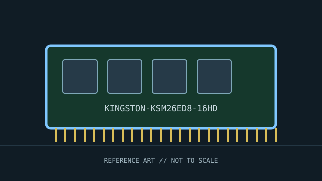

[ INDIVIDUAL COMPONENT // MEMORY / RAM ]
Kingston Server Premier KSM26ED8/16HD
Kingston DDR4 ECC unbuffered server DIMM. This record identifies a distinct product or standards-defined module class; specifications not verified for this exact identity are deliberately left open.

IDENTITY: Kingston Server Premier KSM26ED8/16HD is cataloged as kingston ddr4 ecc unbuffered server dimm. Standards entries describe a module class; named manufacturer entries describe one SKU. Do not treat them as interchangeable records.
Recorded specifications
| Catalog identity | Kingston Server Premier KSM26ED8/16HD |
|---|---|
| Record type | Kingston DDR4 ECC unbuffered server DIMM |
| Verified specifications | 16 GB DDR4-2666; 288-pin ECC UDIMM; 1.2 V; CL19, per Kingston specification. ECC and unbuffered (ECC UDIMM) are the distinguishing module class. Verify rank/organization on exact product revision; not inferred here. |
| Compatibility | Compatible only with systems whose CPU and board support DDR4 ECC UDIMMs at the specified density. Not an RDIMM: do not mix with registered memory in a memory channel. |
| Unverified/variable details | Only values supported by the cited standard or manufacturer source are stated. Confirm exact part number/revision, SPD, ranks, timings, and voltage on the specimen when not specified above. |
Platform compatibility and service
- Compatible only with systems whose CPU and board support DDR4 ECC UDIMMs at the specified density. Not an RDIMM: do not mix with registered memory in a memory channel.
- Before installation, record the full label, manufacturer, part number, revision/date code, contact condition, chip markings, and SPD contents where present.
- Use ESD precautions, handle the module by its edges, and never force it into a slot with different keying. Power down and follow the host’s service manual.
- For server/ECC modules, confirm CPU support, buffering type, channel population, supported ranks/densities, and firmware behavior; physical fit is not proof of ECC operation.
Archival and service notes
Exact manufacturer SKU; preserve label/revision and SPD data. Validate ECC correction/reporting through platform diagnostics rather than relying on the part label alone. Photograph both sides before cleaning; retain the host manual, SPD dump, test host, BIOS revision, and memory-test result with the catalog record.
Sources & further reading
- Kingston — KSM26ED8/16HD product searchManufacturer SKU specifications for capacity, speed, voltage, timing, and ECC unbuffered type.
- Kingston — Server Premier memoryManufacturer product-family documentation and compatibility guidance.
Manufacturer source identifies the named SKU where provided; standards pages describe a generation or module class. A source-family page may not capture every revision. Check the precise specimen and platform service documentation.